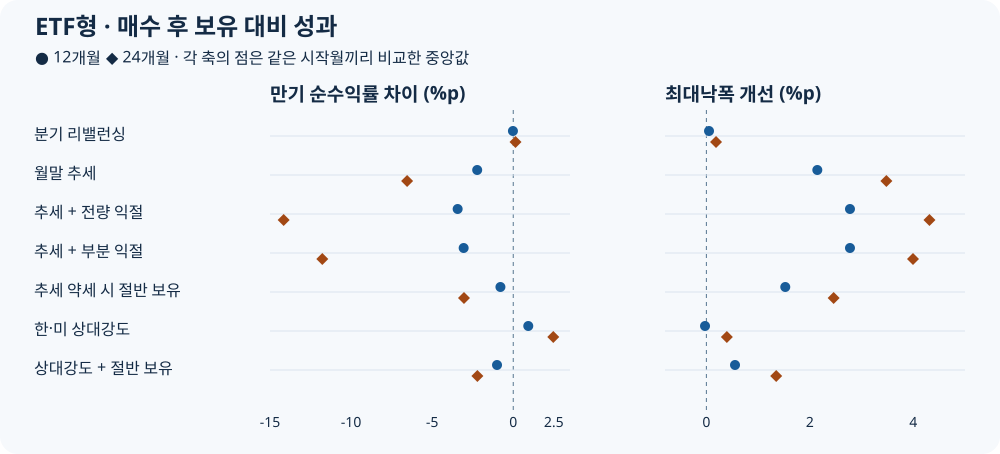
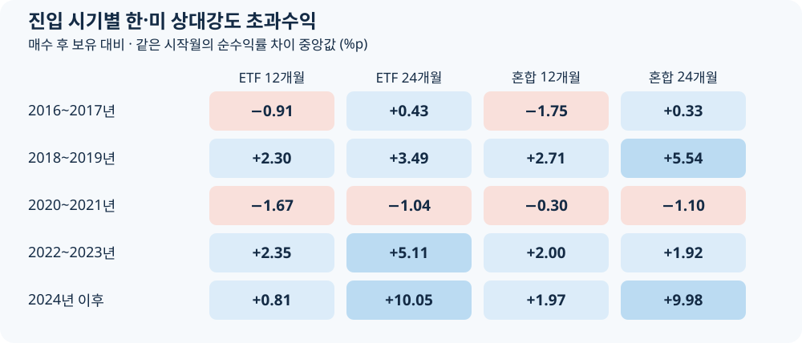
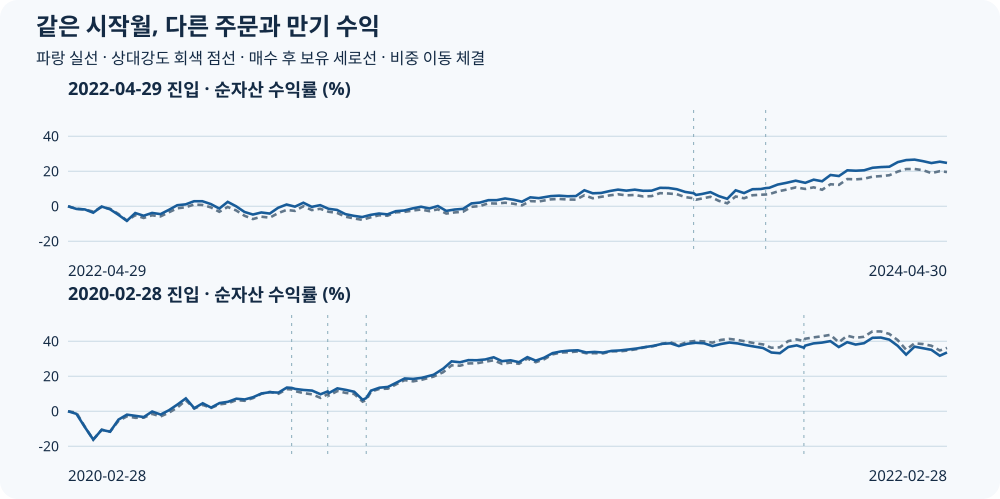
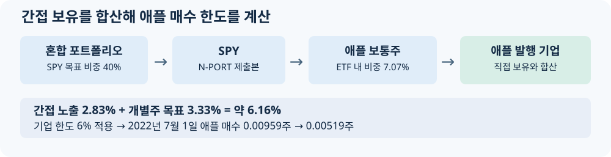

한·미 주식 포트폴리오의 12·24개월 성과 비교
초록. 한·미 주식 포트폴리오에서 분기 리밸런싱, 가격 추세, 목표 수익 실현과 시장 상대강도가 12·24개월 성과를 개선하는지 살폈다. ETF형과 개별주 혼합형을 구성하고, 같은 시작월의 매수 후 보유와 짝지어 비교하였다. 한·미 상대강도는 24개월 기준 다섯 진입 구간 중 네 구간에서 보유보다 높은 수익률 차이의 중앙값을 보였다. 차이는 2022년 이후 진입 표본에서 컸으며 2020~2021년 진입 표본에서는 두 포트폴리오 모두 보유에 뒤졌다. 전량 익절은 최대낙폭을 줄였으나 상승 구간의 만기 수익을 낮췄다. 별도 실험에서 SPY 구성 종목을 연결한 그래프로 개별주 주문을 조정했으며, 목표 확보율은 대조군과 같았다.
1. 서론
1~2년 안에 투자 수익을 현금화하려면 매수 종목과 비중, 매도 시점을 함께 정해야 한다. 목표 수익을 일찍 실현하면 이후 하락을 피할 수 있다. 상승이 이어질 때는 계속 보유한 계좌의 만기 자산이 더 커질 수 있다. 이 연구는 만기 자산가치, 목표 수익 확보, 최대낙폭을 각각 측정하고, 같은 날 같은 포트폴리오를 매수해 계속 보유했을 때의 성과와 비교한다.
연구는 두 가지 결정을 살핀다. 첫째, 가격 움직임에 따라 주식과 현금 비중을 바꾸거나 한·미 시장 간 비중을 옮기는 매매가 보유보다 유리한 시기를 찾는다. 둘째, ETF를 통해 간접 보유한 기업까지 계산해서 개별주 주문을 줄였을 때 집중도 제한이 투자 성과에 어떤 영향을 주는지 확인한다.
2. 관련 연구
DeMiguel 등 [1]은 추정에 의존한 자산 배분과 단순 동일 비중을 표본 밖에서 비교했다. 이는 복잡한 매매 규칙을 평가할 때 단순한 기준을 함께 두어야 하는 이유다. 이 연구에서는 고정 목표 비중으로 시작하는 매수 후 보유를 주 비교 기준으로 두며, 분기마다 기존 목표 비중을 복원하는 조건에서 리밸런싱의 영향을 확인한다.
Moskowitz 등 [2]은 여러 선물시장의 과거 수익률과 장래 수익률 간 관계를 연구했다. Faber [3]는 월말 가격과 이동평균으로 위험자산 보유 여부를 결정하는 규칙을 제시했다. 이 연구의 월말 추세는 두 시장 각각의 이동평균을 사용한다. Jegadeesh와 Titman [4]이 다룬 상대 모멘텀은 과거 수익률로 종목 간 순위를 매긴다. 이 연구는 그 발상을 한·미 시장의 원화 수익률 비교와 각 시장 내 개별주 순위에 적용한다.
Odean [5]은 이익을 본 종목을 더 쉽게 매도하는 투자자 행동을 거래 기록에서 관찰했다. 이 연구는 매도 행동의 유불리를 15% 목표 조건으로 구체화해, 전량 또는 일부를 현금화했을 때 지킨 수익과 놓친 상승을 같은 시작월에서 비교한다.
3. 데이터와 평가 표본
미국의 SPY·애플·마이크로소프트·엔비디아와 국내의 KODEX 200·삼성전자·SK하이닉스·현대차를 사용했다. EC2에 일별 시가·종가, 배당·분배금, 분할, 원·달러 환율을 보관했다. 수집 기간은 추세 계산에 필요한 준비 구간을 포함해 2015년 2월부터 2026년 11월까지다. 연구 표본은 두 나라의 대표 ETF와 고정 대표주로 구성하였다.
| 포트폴리오 | 미국 ETF | 한국 ETF | 미국 개별주 | 한국 개별주 | 원화 현금 |
|---|---|---|---|---|---|
| ETF형 | 50% | 30% | 0% | 0% | 20% |
| 혼합형 | 40% | 20% | 10% | 10% | 20% |
2016년 1월부터 월말마다 100만 원으로 새 계좌를 시작하였다. 평가를 완료한 시작월은 12개월 118개, 24개월 106개다. 최근 5년 표본에서 완료한 시작월은 각각 48개, 36개다. 진입 구간은 시작월로 구분한다. 상승은 공통 ETF형 매수 후 보유의 만기 수익률이 +10% 이상, 손실은 0% 미만인 경우다. 2018년 말, 2020년 초, 2022년 하락기의 진입월을 따로 묶었고 무작위 표본은 고정 시드로 시작월 절반을 뽑았다. 장세 분류는 결과 분석에 사용했다.
4. 방법론
매수 후 보유는 첫 매수 이후 12·24개월 만기에 위험자산을 청산한다. 분기 리밸런싱은 분기 말에 시장과 자산의 목표 비중을 복원한다. 월말 추세는 각 시장 ETF의 월말 총수익 가격이 10개월 이동평균을 웃돌 때 해당 시장에 투자한다. 이동평균 이하에서는 해당 비중을 현금으로 옮긴다. 약세 시 절반 보유 조건은 해당 시장의 목표 비중 절반을 주식에 남긴다.
한·미 상대강도는 직전 월말과 12개월 전 월말의 총수익 지표를 비교한다. 미국 ETF 수익률에는 동일 기간의 원·달러 환율 변화를 반영한다. 월말 판단에서 더 강한 시장은 기준 비중에 15%p를 더하고 다른 시장에서는 같은 비중을 뺀다. 미국이 우세하면 시장별 목표 비중은 미국 65%·한국 15%, 한국이 우세하면 미국 35%·한국 45%다. 시장 순위가 바뀐 달과 분기 말에 목표 비중을 적용한다. 결합 조건은 이 목표 비중을 구한 뒤 약세 시장의 비중을 절반으로 낮춘다. 개별주 순위 조건은 각 시장의 대표주 세 종목 중 과거 수익률 상위 두 종목에 개별주 몫을 나눈다.
목표 익절은 월말 추세 전략으로 운용하다가 비용을 반영한 예상 청산수익률이 종가 기준 15%에 도달하면 다음 거래 가능 시가에 위험자산 전량 또는 절반을 매도한다. 이후 재진입을 중단하고, 부분 익절의 잔여 주식은 만기에 판다. 목표 확보 건수는 만기까지 위험자산을 청산한 뒤 원화 자산이 최초 금액의 115% 이상인 경우다. 전량 익절로 조기에 목표를 확보한 계좌도 포함한다.
시가 체결은 한국과 미국의 거래 순서에 맞춰 처리했다. 편도 거래비용 10bp와 미국 주문의 환전비용 10bp를 가정했다. 직전에 확인할 수 있는 환율로 원화 가치를 계산했으며 현금 이자는 0으로 두었다. 만기 순수익률과 계좌별 최대낙폭을 집계했다. 보유 대비 수익률 차이와 낙폭 개선은 각각 같은 시작월의 두 계좌에서 차이를 계산하고 그 중앙값으로 보고한다.
5. 실험 결과
5.1 매수 후 보유 대비 전체 성과
한·미 상대강도의 짝지은 수익률 차이 중앙값은 ETF형의 12개월과 24개월에서 각각 +0.93%p와 +2.47%p였다. 혼합형에서도 각각 +0.80%p와 +1.67%p였으나, 전략별 만기 수익률 중앙값은 두 기한 모두 매수 후 보유가 높았다. ETF형 24개월에서도 상대강도는 73/106개 시작월에서 앞섰지만, 전략별 수익률 중앙값은 보유 +23.97%, 상대강도 +23.59%였다. 승수와 짝지은 차이는 개별 시작월의 비교를, 전략별 중앙값은 각 전략의 수익률 분포를 나타낸다.
| 전략 | 12개월 목표 확보 | 12개월 순수익률 / 최대낙폭 | 12개월 보유 대비 · 승수 | 24개월 목표 확보 | 24개월 순수익률 / 최대낙폭 | 24개월 보유 대비 · 승수 |
|---|---|---|---|---|---|---|
| 매수 후 보유 | 51/118 | +12.28% / −9.35% | 기준 | 72/106 | +23.97% / −13.52% | 기준 |
| 분기 리밸런싱 | 50/118 | +12.09% / −9.23% | −0.02%p · 54/118 | 74/106 | +24.05% / −13.23% | +0.14%p · 59/106 |
| 월말 추세 | 37/118 | +10.35% / −7.30% | −2.22%p · 31/118 | 64/106 | +21.40% / −9.23% | −6.55%p · 14/106 |
| 추세 + 전량 익절 | 37/118 | +10.35% / −6.63% | −3.43%p · 22/118 | 62/106 | +15.18% / −8.15% | −14.16%p · 8/106 |
| 추세 + 부분 익절 | 39/118 | +10.35% / −7.09% | −3.06%p · 21/118 | 65/106 | +17.77% / −9.21% | −11.78%p · 8/106 |
| 추세 약세 시 절반 보유 | 45/118 | +11.48% / −8.05% | −0.79%p · 31/118 | 67/106 | +23.02% / −11.86% | −3.04%p · 18/106 |
| 한·미 상대강도 | 50/118 | +12.46% / −9.68% | +0.93%p · 70/118 | 76/106 | +23.59% / −13.91% | +2.47%p · 73/106 |
| 상대강도 + 절반 보유 | 49/118 | +11.06% / −8.35% | −1.00%p · 35/118 | 69/106 | +22.19% / −13.69% | −2.21%p · 30/106 |
| 전략 | 12개월 목표 확보 | 12개월 순수익률 / 최대낙폭 | 12개월 보유 대비 · 승수 | 24개월 목표 확보 | 24개월 순수익률 / 최대낙폭 | 24개월 보유 대비 · 승수 |
|---|---|---|---|---|---|---|
| 매수 후 보유 | 68/118 | +19.66% / −11.80% | 기준 | 85/106 | +40.70% / −16.29% | 기준 |
| 분기 리밸런싱 | 68/118 | +18.80% / −10.97% | −0.51%p · 41/118 | 87/106 | +37.29% / −14.80% | −0.78%p · 41/106 |
| 월말 추세 | 60/118 | +15.60% / −7.51% | −3.12%p · 26/118 | 68/106 | +30.30% / −10.97% | −10.36%p · 11/106 |
| 추세 + 전량 익절 | 59/118 | +15.01% / −6.13% | −8.13%p · 20/118 | 65/106 | +15.19% / −7.43% | −26.21%p · 7/106 |
| 추세 + 부분 익절 | 60/118 | +15.33% / −6.38% | −5.63%p · 19/118 | 71/106 | +22.53% / −8.92% | −18.60%p · 7/106 |
| 추세 약세 시 절반 보유 | 63/118 | +16.07% / −8.75% | −1.76%p · 23/118 | 75/106 | +34.82% / −13.09% | −6.46%p · 11/106 |
| 한·미 상대강도 | 72/118 | +19.08% / −10.70% | +0.80%p · 71/118 | 86/106 | +35.13% / −15.71% | +1.67%p · 65/106 |
| 상대강도 + 절반 보유 | 66/118 | +17.23% / −9.77% | −1.58%p · 35/118 | 76/106 | +33.79% / −15.50% | −4.60%p · 20/106 |
| 시장별 상위 개별주 2종목 | 66/118 | +18.73% / −11.64% | −0.45%p · 50/118 | 86/106 | +38.87% / −15.44% | −2.60%p · 24/106 |

전량 익절은 혼합형 24개월에서 최대낙폭 중앙값을 −16.29%에서 −7.43%로 줄였다. 같은 시작월에서 만기 수익률의 짝지은 차이는 −26.21%p였고, 목표 확보도 85건에서 65건으로 줄었다. 부분 익절은 전량 익절보다 24개월 만기 상승에 더 많이 참여했지만 두 포트폴리오에서 보유 대비 수익 차이는 여전히 음수였다.
5.2 진입 시기와 장세별 차이
상대강도는 ETF형과 혼합형에서 모두 24개월 기준 다섯 진입 구간 중 네 구간을 앞섰다. 12개월에서는 세 구간에서 앞섰다. 2020~2021년 진입 계좌에서는 두 포트폴리오 모두 두 평가 기한에서 보유보다 성과가 낮았다. 최근 5년 ETF형 24개월에서는 36/36개 시작월에서 앞섰고, 만기 수익률 중앙값은 보유 +36.48%, 상대강도 +41.40%였다. 목표 확보는 33/36으로 같았고 최대낙폭 중앙값은 −12.84%에서 −13.38%로 깊어졌다.
| 진입 시기 | ETF 12개월 | ETF 24개월 | 혼합 12개월 | 혼합 24개월 |
|---|---|---|---|---|
| 2016~2017년 | −0.91%p · 5/24 | +0.43%p · 13/24 | −1.75%p · 2/24 | +0.33%p · 12/24 |
| 2018~2019년 | +2.30%p · 23/24 | +3.49%p · 18/24 | +2.71%p · 23/24 | +5.54%p · 18/24 |
| 2020~2021년 | −1.67%p · 8/24 | −1.04%p · 8/24 | −0.30%p · 11/24 | −1.10%p · 8/24 |
| 2022~2023년 | +2.35%p · 22/24 | +5.11%p · 24/24 | +2.00%p · 21/24 | +1.92%p · 17/24 |
| 2024년 이후 | +0.81%p · 12/22 | +10.05%p · 10/10 | +1.97%p · 14/22 | +9.98%p · 10/10 |

| 기한·표본 | 계좌 수 | 분기 리밸런싱 | 월말 추세 | 전량 익절 | 한·미 상대강도 |
|---|---|---|---|---|---|
| 12개월 · 공통 ETF 만기 손실 | 14 | +0.22%p | +1.16%p | +1.16%p | +1.41%p |
| 24개월 · 2018년 말 급락기 진입 | 4 | +1.45%p | −24.37%p | −24.37%p | +7.82%p |
| 24개월 · 2020년 초 급락기 진입 | 4 | −1.72%p | −7.36%p | −37.14%p | −4.17%p |
| 24개월 · 2022년 하락기 진입 | 11 | −7.65%p | −19.08%p | −29.81%p | +0.01%p |
| 24개월 · 공통 ETF 상승 | 88 | −2.10%p | −12.51%p | −31.14%p | +1.68%p |
| 24개월 · 무작위 시작월 | 53 | −0.32%p | −10.06%p | −22.90%p | +1.67%p |
5.3 동일 시작월의 판단과 체결
보유를 앞선 계좌. 2022년 4월 29일 진입한 ETF형에서 2023년 9월 말 한국 시장이 상대강도에서 앞섰다. 10월 2일 SPY를 426.62달러에 일부 팔고, 10월 4일 KODEX 200을 32,480원에 추가 매수했다. 11월 말 미국이 다시 앞서자 12월 1일 KODEX 200을 33,780원에 일부 팔고 SPY를 455.77달러에 추가 매수했다. 만기 순수익률은 상대강도 +24.76%, 보유 +19.56%였고, 최대낙폭은 각각 −10.45%, −10.13%였다.
보유에 뒤진 계좌. 2020년 2월 28일 진입한 ETF형에서는 2020년 9월 1일 SPY를 350.21달러에 일부 팔고 KODEX 200을 30,805원에 샀다. 다음 월말 미국이 다시 앞서 10월 1일 SPY를 337.69달러에 추가 매수하고, 한국의 다음 거래일인 10월 5일 KODEX 200을 31,070원에 일부 팔았다. 11월 초에는 다시 한국 비중을 늘렸다. 이 계좌의 만기 순수익률은 상대강도 +33.60%, 보유 +36.19%였으며, 최대낙폭은 각각 −19.98%, −20.40%였다.

5.4 지식그래프를 사용한 주문과 효과
지식그래프는 혼합형 분기 리밸런싱의 미국 개별주 주문 크기를 정할 때 사용했다. SEC N-PORT 원본에서 SPY와 보유 증권을 연결하고 각 관계에 보유 비중, 보고 기준일, 제출일, 접수번호를 기록했다. 증권 CUSIP를 발행 기업에 연결해 애플·마이크로소프트·엔비디아의 직접·간접 비중을 합산했다. 판단일 전날까지 제출되고 보고 기준일이 185일 이내인 최신 스냅샷을 사용했다. 검증에 통과한 SPY 스냅샷은 29개였다. 공개 제출본은 SEC에서 확인할 수 있다. SEC N-PORT 데이터
그래프의 세 관계는 포트폴리오 → SPY → 구성 증권 → 발행 기업이다. 구현은 보유 관계와 기업 매핑을 CSV에 저장하고 Python에서 증권 식별자로 연결하여 해당 기업의 비중을 조회하는 방식이다. 기업별 총 목표 노출은 직접 보유 목표 비중과 SPY 목표 비중 × SPY 내 해당 기업 비중의 합이다. 합이 6%를 넘으면 직접 보유 목표액을 줄이고 남은 금액을 현금으로 두었다. 가격 추세, 한·미 상대강도, 익절 판단은 시세·환율과 계좌 값으로 계산했다. 그래프 적용 범위는 SPY 간접 노출을 반영한 주문 크기 조정이다.
2022년 6월 30일 리밸런싱에서 사용한 SPY 보유내역의 기준일은 3월 31일이고 제출일은 5월 27일이었다. 애플의 SPY 내 비중은 약 7.07%였다. SPY 목표 비중 40%를 곱한 간접 노출 2.83%에 직접 목표 3.33%를 더하면 약 6.16%다. 기업 한도를 적용하자 7월 1일 136.04달러에 체결된 애플 매수 수량이 0.00959주에서 0.00519주로 줄었다. 수량은 원화 100만 원 모의 계좌의 분할 매수 단위다. SPY 원본 제출본

| 조건 | 목표 확보 | 순수익률 | 최대낙폭 | 짝지은 보유 대비 |
|---|---|---|---|---|
| 매수 후 보유 | 34/36 | +59.71% | −14.49% | 기준 |
| 분기 리밸런싱 · 직접 보유 한도 | 34/36 | +47.17% | −13.26% | −6.99%p |
| SPY 간접 보유까지 합산한 한도 | 34/36 | +47.08% | −13.16% | −7.02%p |
| 같은 목표 현금을 남긴 비례 축소 | 34/36 | +46.91% | −13.19% | −7.19%p |
간접 노출 조건과 같은 목표 현금을 남긴 비례 축소 조건을 짝지으면 순수익률 차이 중앙값은 +0.17%p였다. 네 조건의 목표 확보 건수는 같았으며, 직접 보유 한도와 비교한 낙폭 중앙값의 차이는 0.10%p였다. 그래프는 기업별 노출을 계산해 실제 애플 주문을 줄였다. 이 표본에서 목표 확보율이나 전체 만기 수익의 개선은 관찰되지 않았다.
5.5 한·미 상대강도에 SPY 구성 기업 정보 결합
앞 절은 ETF와 개별주의 중복 노출을 제한했다. 이 절에서는 ETF 자체의 주문액을 변경한다. 기존 상대강도가 미국을 우세 시장으로 고른 달에, 판단일 전에 제출된 SPY 스냅샷으로 SPY → 편입 증권 → 발행 기업의 2홉을 확인하고 당시의 총수익 시계열을 연결했다. 시세와 발행 기업 연결을 검증한 범위는 애플·마이크로소프트·엔비디아 세 곳이다. 국내 ETF 구성 기업의 과거 시점별 데이터는 이 실험에 사용하지 않았다.
기존 전략은 우세 시장에 15%p를 옮긴다. 아래 조건을 충족하면 미국으로 옮기는 폭을 7.5%p로 줄인다. 목표 비중은 미국 65%·한국 15%에서 미국 57.5%·한국 22.5%로 바뀌며 두 조건 모두 현금 목표는 20%다. 장기 수익률은 12개월 전 월말부터 직전 월말까지의 현지 통화 총수익률이다. 한국이 우세하거나 공개된 유효 스냅샷이 없으면 기존 상대강도를 따른다. 그래프 판정이 가능했던 미국 우세 월은 53개였다.
| 전략 | 축소 조건 | 축소 월 수 | 만기 수익률 | 최대낙폭 | 목표 확보 | 상대강도 대비 |
|---|---|---|---|---|---|---|
| 매수 후 보유 | 기준 비중으로 매수 후 보유 | — | +36.48% | −12.84% | 33/36 | −5.91%p |
| 한·미 상대강도 단독 | 우세 시장에 15%p 이동 | — | +41.40% | −13.38% | 33/36 | 0.00%p |
| ① 상승 기업 수 | 장기 수익률이 0% 이하인 기업이 두 곳 이상 | 10 | +41.69% | −13.38% | 33/36 | +0.71%p |
| ② 상승 기업 편입 비중 | 장기 수익률이 0% 이하인 기업의 편입 비중이 세 기업 합계의 절반 초과 | 10 | +41.69% | −13.38% | 33/36 | +0.71%p |
| ③ ETF 대비 부진 기업 수 | SPY보다 장기 수익률이 낮은 기업이 두 곳 이상 | 12 | +41.20% | −13.47% | 33/36 | +0.80%p |
| ④ 3개월 하락 기업 수 | 최근 3개월 수익률이 음수인 기업이 두 곳 이상 | 16 | +40.89% | −12.69% | 33/36 | −0.06%p |
| ⑤ 최대 편입 기업의 추세 | 세 기업 중 SPY 편입 비중이 가장 큰 기업의 장기 수익률이 0% 이하 | 8 | +41.77% | −13.38% | 33/36 | +0.66%p |
| 미국 우세 시 일괄 축소 | 자료가 확인된 미국 우세 월 모두 이동 폭 축소 | 53 | +39.29% | −12.89% | 33/36 | −1.46%p |
최근 ETF형 24개월에서 ③은 상대강도 대비 짝지은 수익률 차이 중앙값이 +0.80%p였고 26/36개 시작월에서 앞섰다. 전략별 만기 수익률 중앙값은 상대강도 +41.40%, ③ +41.20%였다. ⑤는 전략별 중앙값이 +41.77%로 더 높았다. ①과 ②는 이번 표본에서 같은 달에 발동해 체결과 결과가 같았다. 목표 확보 건수는 모두 33건이었다. 전체 기간에서는 다섯 조건 모두 상대강도 대비 수익률 차이 중앙값이 0%p였다. 자료가 없거나 조건에 걸리지 않아 주문이 같았던 계좌가 많았다. 미국 우세 월에 일괄 축소한 대조군은 최근 ETF형 24개월에서 −1.46%p였으며, 다섯 규칙과 축소 빈도에는 차이가 있다.
주문 사례. 2022년 10월 31일 미국이 우세했지만, 공개된 SPY 편입 증권을 대조하니 마이크로소프트(−29.18%)와 엔비디아(−52.48%)의 장기 수익률이 SPY(−21.05%)보다 낮았다. ③이 7.5%p 이동을 지시해 11월 1일 SPY 매수량은 1.17193주에서 1.03670주로 줄었고, KODEX 200 매수량은 4.99251주에서 7.48877주로 늘었다. 체결가는 각각 390.14달러와 30,045원이었다. 이 시작월의 24개월 수익률은 단독 +32.46%, 그래프 결합 +33.34%였다. 당시 SPY 보유 원문
이 비교는 세 기업의 가격과 실제 편입 관계가 주문을 바꿀 수 있음을 보여준다. 시장 전체 상승 확산도는 향후 더 많은 구성 기업으로 검증해야 한다. 동일 기간에서 후보 다섯 개를 비교한 탐색 결과이므로 독립 기간에서도 재현되는지는 확인하지 않았다. 전체·최근 표본 및 진입 구간별 비교 CSV
5.6 SPY·KODEX 200의 과거 전체 구성내역으로 확대
앞 절의 ③을 두 ETF로 확대하였다. 미국은 SEC 제출본 29개, 한국은 운용사가 제공한 날짜별 구성내역 27개를 사용하였다. 당시 편입된 주식 행에서 출발해 ETF → 편입 증권 → 발행 기업을 연결하고 기업별 총수익률을 조회했다. 중복 발행 기업은 한 번만 셌다. 미국은 실제 제출일을 사용하였다. 국내 과거 파일의 최초 공개 시각은 확인되지 않아 기준일 7일 뒤에 이용할 수 있었다고 가정하고 30일로 바꿔 결과를 다시 계산하였다. 운용사 서버가 일부 날짜에 요청 제한을 반환해 국내 구성 이력이 비어 있는 달이 남았다. SEC N-PORT · KODEX 200 상품 자료
전체 구성 행을 출발점으로 삼았으며, 796개 종목 시계열을 확보했다. 발행 기업 수와 구성 비중을 각각 80% 이상 설명하는 달만 남겼다. 우세 ETF보다 장기 수익률이 낮은 기업을 세고, 시세가 없는 기업을 모두 포함하거나 모두 제외해도 과반 판정이 같을 때만 신호를 채택했다. 두 ETF가 모두 자료 기준을 충족하고 우세 시장의 과반을 판정할 수 있었던 월은 26개다. 실제 축소 신호는 미국 4개, 한국 18개로 총 22개였다. 자료가 부족한 달에는 상대강도 단독 주문을 적용했다.
| 전략 | 12개월 순수익률 / 최대낙폭 | 12개월 목표 확보 | 24개월 순수익률 / 최대낙폭 | 24개월 목표 확보 |
|---|---|---|---|---|
| 매수 후 보유 | +12.28% / −9.35% | 51/118 | +23.97% / −13.52% | 72/106 |
| 상대강도 단독 | +12.46% / −9.68% | 50/118 | +23.59% / −13.91% | 76/106 |
| 상대강도 + 구성 기업 그래프 | +12.46% / −9.67% | 51/118 | +24.38% / −13.91% | 77/106 |
전체 24개월에서 그래프 결합은 같은 시작월의 매수 후 보유보다 중앙값 2.37%p 높은 수익률을 기록했다. 상대강도 단독과의 차이 중앙값은 12개월과 24개월 모두 0.00%p였다. 축소가 작동한 24개월 계좌 49개에서는 상대강도 단독 대비 +1.36%p였으나, 최근 5년 안에서 실제로 영향을 받은 10개는 모두 단독에 뒤졌고 차이 중앙값은 −8.98%p였다. 공개 시점을 30일 뒤로 옮겨도 전체 기간의 짝지은 수익률 차이와 목표 확보 건수는 같았다.
| 진입 시기 | 계좌 | 그래프 − 매수 후 보유 | 그래프 − 상대강도 단독 |
|---|---|---|---|
| 2016~2017년 | 24 | +0.43%p | 0.00%p |
| 2018~2019년 | 24 | +4.82%p | +1.60%p |
| 2020~2021년 | 24 | +1.24%p | +1.28%p |
| 2022~2023년 | 24 | +5.11%p | 0.00%p |
| 2024년 이후 | 10 | +2.18%p | −8.98%p |
같은 횟수로 비중을 줄인 대조군. 같은 시장과 2년 구간별로 축소 횟수를 고정하면 가능한 축소 일정이 하나뿐이었다. 각 묶음에서 전부 줄이거나 한 번도 줄이지 않았기 때문이다. 시장별로만 횟수를 고정하고 월을 다시 뽑은 대조군을 여덟 번 추가하였다. 그래프가 작동한 24개월 계좌에서 상대강도 단독 대비 차이 중앙값은 대조군별 +0.79~+1.60%p였다. 그래프의 +1.36%p는 이 범위 안에 있었다. 최근 5년의 해당 10개 계좌는 그래프와 여덟 대조군이 모두 −8.98%p였다. 한국 우세의 판정 가능 월마다 축소가 발생해, 이 표본에서 한국은 축소 시점 선택 효과를 분리하기 어려웠다.
주문 사례. 2020년 5월 29일에는 SPY의 발행 기업 500곳 가운데 433곳의 시세를 연결했다. 이 중 259곳이 SPY보다 낮은 수익률을 기록해 미확인 기업 67곳을 모두 빼도 전체 기업의 과반이었다. 한국 ETF는 198곳 중 189곳을 연결했다. 7.5%p 이동을 적용한 6월 1일 SPY 매수는 303.62달러에 1.72930주에서 1.52976주로 줄었다. 판단에 사용한 SEC 제출본
구성 종목을 넓혔을 때 주식 비중과 체결은 바뀌었다. 다만 우위가 진입 시기에 따라 바뀌었고 같은 축소 횟수의 대조군 범위를 벗어나지 않았다. 결과 집계와 수집·재현 절차를 함께 제공한다. 성과와 시기별 대조군 집계 · 확대 실험 코드
6. 논의와 한계
한·미 상대강도는 주식 목표 비중을 유지하면서 시장 간 주문을 바꿨다. 추세와 익절은 주식 비중 자체를 줄이므로 반등 참여가 줄어들 수 있다. 실제로 2020년 초 급락기 진입 표본에서는 위험자산을 줄인 전략의 만기 수익이 낮았다. 반면 12개월 만기까지 공통 ETF가 손실이었던 표본에서는 시장 추세와 상대강도가 보유보다 높은 짝지은 수익률을 기록했다.
월별 평가창은 서로 겹친다. 공통 ETF의 24개월 수익률이 −10% 이하인 계좌는 없었고, 손실로 끝난 계좌도 한 개였다. 현재까지 남은 대표주를 고정해 선정했으며, 세금·현금 이자·결제 제약과 실제 시장 충격은 반영하지 않았다. 상대강도는 이미 살펴본 기간에 추가한 탐색 실험이므로 독립 기간에서 같은 규칙을 검증해야 한다. 그래프 비교는 미국 SPY와 세 발행 기업에 한정되며, 국내 ETF 구성 이력과 공개 시점별 실적의 전체 커버리지는 이번 평가 범위에 들어가지 않았다.
7. 결론
한·미 상대강도는 24개월 기준 다섯 진입 구간 중 네 구간에서 매수 후 보유를 앞선 후보였다. 우위는 2022년 이후 진입 계좌에서 컸으며, 2020~2021년 진입 계좌에서는 보유가 앞섰다. 전량 익절은 낙폭과 현금화 시점을 개선할 수 있지만 이 표본에서는 만기 수익률과 목표 확보 건수가 낮았다. SPY 구성에서 확인한 기업별 간접 노출은 주문 크기를 바꾸는 근거로 쓰였으며, 이번 표본에서 성과 개선 폭은 작았다.
참고문헌
- DeMiguel, V., Garlappi, L., & Uppal, R. (2009). Optimal versus naive diversification. The Review of Financial Studies, 22(5), 1915–1953. DOI
- Moskowitz, T. J., Ooi, Y. H., & Pedersen, L. H. (2012). Time series momentum. Journal of Financial Economics, 104(2), 228–250. DOI
- Faber, M. T. (2007). A quantitative approach to tactical asset allocation. The Journal of Wealth Management, 9(4), 69–79. 개정 원문
- Jegadeesh, N., & Titman, S. (1993). Returns to buying winners and selling losers. The Journal of Finance, 48(1), 65–91. DOI
- Odean, T. (1998). Are investors reluctant to realize their losses? The Journal of Finance, 53(5), 1775–1798. DOI
부록 A. 한·미 상대강도 자동매매 구현 명세
한·미 상대강도는 두 시장 ETF의 과거 원화 총수익률을 비교해 다음 보유 비중을 정하는 월말 전략이다. 아래 명세는 성과표의 relative에 해당한다. 한국 시장은 KODEX 200(069500.KS), 미국 시장은 SPY, 환율은 1달러당 원화(KRW=X)를 사용한다. 두 시장이 모두 하락해도 상대적으로 덜 하락한 시장에 비중을 늘린다. 주식 비중의 합계는 목표 기준 80%이고 나머지 20%는 원화 현금이다. 10개월 추세 필터, 15% 도달 시 조기 청산, ETF 구성기업 그래프는 각각 별도 전략이다.
1. 월말 신호
판단일은 그 달의 한국·미국 거래일을 합친 집합에서 마지막 날짜다. 실거래에서는 양 거래소의 해당 월 마지막 정규장이 모두 끝났음을 확인한 뒤 한 번 계산한다. 판단월을 m이라 할 때 최근 기준 r은 m−1월의 달력 말일, 과거 기준 a는 m−12월의 달력 말일이다. 두 기준일 사이에는 11개월이 있다. 판단월 수익률은 순위 계산에서 한 달 건너뛴다.
AUS(d)와 AKR(d)는 d 이하의 마지막 거래일 배당·분할 조정 종가다. F(d)는 백테스트에서 d 미만의 마지막 환율 종가다. 휴일에는 각 시계열에서 독립적으로 마지막 관측을 찾는다. 미국 수익률 배수는 AUS(r) / AUS(a) × F(r) / F(a), 한국 수익률 배수는 AKR(r) / AKR(a)다. 배수에서 1을 빼면 수익률이다. 원화 약세로 달러당 원화가 오르면 미국 원화 수익률이 높아진다.
| 판정 | 미국 | 한국 | 원화 현금 |
|---|---|---|---|
| 미국 배수 ≥ 한국 배수 | 65% | 15% | 20% |
| 미국 배수 < 한국 배수 | 35% | 45% | 20% |
| 초기 이력 부족 | 50% | 30% | 20% |
ETF형은 각 시장 몫을 해당 ETF에 전부 배정한다. 혼합형은 미국 몫의 80%를 SPY에, 나머지 20%를 AAPL·MSFT·NVDA에 동일하게 배정한다. 한국 몫의 3분의 2를 KODEX 200에, 나머지 3분의 1을 삼성전자(005930)·SK하이닉스(000660)·현대차(005380)에 동일하게 배정한다. 종목 구성과 시장 내부 비율은 고정한다. 원본 코드에서는 혼합형의 개별주를 포함한 8개 종목의 첫 가격 중 가장 늦은 날짜보다 과거 기준일이 앞서면 초기 이력 부족으로 처리한다. ETF형 성과를 그대로 재현할 때도 같은 기준을 쓴다.
2. 주문 예약과 체결
- 언제 재조정하는가. 최초 진입일, 우세 시장이 바뀐 판단일, 3·6·9·12월 판단일이다. 우세 시장이 같고 분기말도 아니면 보유 수량을 유지한다. 최초 중립에서 우세 시장이 정해지거나 그 반대인 경우도 상태 변경에 해당한다.
- 얼마를 보유할 것인가. 판단일의 원화 현금에 각 보유 종목의 마지막 종가 평가액을 더해 원화 순자산을 계산한다. 미국 종가 평가에는 판단일보다 앞선 마지막 환율을 쓴다. 순자산과 종목별 목표 비중을 곱해 목표 보유액을 고정한다.
- 언제 얼마를 사고파는가. 각 종목의 판단일 이후 첫 거래일 시가에 주문한다. 휴장 차이로 한국과 미국 체결일이 달라질 수 있다. 목표 수량은 목표 원화 보유액을 체결 시가의 원화 환산값으로 나눈 값이다. 목표 수량에서 현재 수량을 빼 양수면 매수, 음수면 매도한다. 미국 시가는 체결일보다 앞선 마지막 환율로 환산한다.
- 현금과 비용을 어떻게 반영하는가. 백테스트는 같은 날짜의 한국 세션을 미국보다 먼저 처리하고 각 세션에서 매도를 매수보다 먼저 반영한다. 국내 주문은 편도 10bp, 미국 주문은 편도 20bp(거래 10bp와 환전 10bp)다. 현금이 부족하면 수수료를 낼 수 있는 수량까지만 매수한다. 배당은 유효 거래일에 현금에 반영한다. 성과표의 각 계좌는 12·24개월 만기에 각 종목의 마지막 거래일 종가로 청산한다. 이 전략에 +15% 도달 시 조기 청산 규칙은 적용하지 않는다.
예를 들어 미국 ETF의 조정 종가 배수가 1.10이고 환율 배수가 1.05라면 미국 원화 수익률은 +15.5%다. 한국 수익률이 +12%이면 미국이 우세하다. 판단 시점 순자산이 1,000만원인 ETF형의 목표 보유액은 SPY 650만원, KODEX 200 150만원이다. 당시 각 보유액이 500만원과 300만원이면 미국 비중을 늘리고 한국 비중을 줄인다. 실제 수량은 각 시장의 다음 시가, 현재 보유 수량, 주문 비용으로 계산하므로 체결 후 비중이 목표와 달라질 수 있다.
3. 자동매매봇에 연결할 때
전략 모듈은 판단월, 판단일, 전략 버전, 두 ETF와 두 환율 기준값의 날짜·값, 우세 시장, 목표 비중 및 목표 원화 금액을 저장한다. 주문 모듈은 이를 증권사 종목 코드, 주문 가능 잔고, 주문 가능 수량 단위와 수수료에 매핑한다. 시가 체결은 연구용 가정이다. 시가가 열린 후 확인한 가격으로 수량을 계산한다면 실제 체결가는 증권사 응답으로 기록하고 시가 체결로 간주하지 않는다. 월말 데이터 누락이나 갱신 실패는 초기 이력 부족과 구분하여 주문을 생성하기 전에 확인한다.
실거래 연결에서는 계좌·전략 버전·판단월·종목을 주문 식별 키로 사용한다. 재시작 시 기존 주문 및 부분 체결을 조회한 뒤 남은 수량을 계산한다. 국가 간 매도 대금은 증권사가 주문 가능 잔고로 돌려준 금액만 매수에 사용한다. 판단 기록에는 입력 컷오프와 목표 수량을, 체결 기록에는 주문 ID·일시·수량·가격·환율·비용을 남긴다. 이 운영 절차는 봇 구현 지침이며, 성과표에는 백테스트의 소수점 수량과 즉시 사용 가능한 현금 가정을 적용했다.
재현 자료
전체 성과는 상대강도를 포함한 EC2 후속 실행에서 집계했다. 매수 후 보유 448개 계좌의 만기 순수익률과 최대낙폭이 기본 실행과 일치했으며, 후속 실행에서 체결 163,528건의 순서와 회계를 검증했다. SPY 간접 노출 표는 별도 기본 실행의 세 대조 조건을 사용했다.
python3 scripts/backtest_portfolio_exit.py \
--out /var/lib/fintos-portfolio/2026-11-28/extension \
--start 2016-01-01 --end 2026-11-26전략별 집계는 전체 성과표 CSV, 진입 시기별 집계는 시기별 성과 CSV, 그래프와 상대강도 사례 체결은 사례 주문 CSV에서 확인할 수 있다. 원본과 전체 주문 원장은 EC2에 보관되어 있다. 재현 설명 · 백테스트 코드